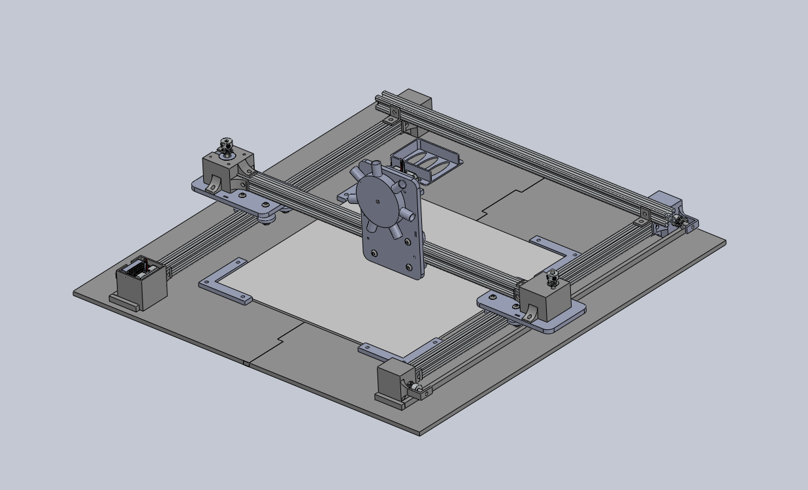

Mechanical Subsystem
An overview of our mechanical design.

Mechanical System Overview
We chose to base the system on a horizontal x-y gantry to provide the most flexibility in the type of visualization we could produce. The goal was to create a gantry that could move a pen over a piece of paper according to the design generated by the music visualization software and that the mechanism could also change the color of the pen. We also aimed to minimize the use of materials and to make the machine easy to assemble and disassemble. We designed the drawing gantry in SolidWorks, and the primary manufacturing techniques were 3D printing and laser cutting, which allowed us to easily make edits to our prototypes.
Gantry Frame
The frame of the gantry is a U-shape made of two 50 cm bars of 20mm x 20mm v-slot extruded aluminum, crossed on one end by another 50 cm bar of the same material. To achieve the y-motion, another piece of aluminum rail is mounted to each y-axis bar on a rolling carriage made from laser cut MDF so that the entire bar can slide in the y-direction. Another carriage, which holds the color changing motor and pens, is mounted vertically on the x-axis bar. The frame is primarily held together by screws and nuts inserted in the rails, which hold in place the motor and pulley mounts as well as the 3D printed L-brackets at the corner of the frame. The aluminum is mounted to a plywood base, which adds a structure to place the drawing surface on and ensures that the frame is held at perpendicular angles, as we found that without this support the entire frame would shift and prevent the x-axis rail from moving across the entire y-axis.
X-Y Motion
The x-y motion is driven by two NEMA 17 stepper motors, one for each axis. The y-axis motor is mounted with a 3D printed mount to the end of one of the y-axis bars, on the other end of this bar is another mount with a 6mm GT2 pulley. Between these is a timing belt that attaches to the carriage. On the opposite side there is no motor, but a corresponding pair of pulleys and belts. In the interest of simplicity, we wanted to use only one motor to drive the y-axis. One challenge with this was overcoming the torque created by having a friction force from the opposite carriage applied at a distance from the applied force of the motor. Our first stepper motor had a torque of 20 N-cm, not quite strong enough to overcome this torque, so we exchanged it for a stronger Nema 17 stepper motor with 42 N-cm of torque.
Pen Mechanism
The pen holder is designed to hold the marker in steady as the gantry draws, and also allows us to change color to make the art more visually interesting. We felt that having multiple colors would allow us to reflect more aspects of the music. Originally, the pen holder was made from a piece of laser cut material, and was held in place with a pair of spacers sandwiching the disk as seen in figure 3. While laser cutting has the potential to be a less material and time intensive manufacturing process, we found that the piece wiggled too much to allow for the precise spirograph design we wanted.The final pen holder is therefore made from a single 3D printed piece that press fits onto the motor shaft. The pens also fit snugly into their holders and can be adjusted slightly to make contact with the paper. This is one feature that left room for improvement, as tweaking the position of the pens to make precisely the right amount of contact with the paper was extremely finicky. We also found that the wood base was not perfectly level as the wood was a bit warped, so sometimes the pen did not fully contact the paper for all parts of the drawing.
Full CAD
Learnings and Next Steps
We were overall very pleased with the final gantry, though there are some things that we would do differently in the future. The motion in the y-direction, while greatly improved by the measures taken during our sprints, is still sometimes a bit choppy due to friction. Another source of inaccuracy is the unevenness of the wooden base, which could easily be fixed with a different piece of wood – ideally not two pieces glued together. We had originally planned the drawing area to be larger, hence the wide space between the drawing surface and the frame. Scaling down the entire gantry could help reduce the amount of torque on the y-motor. Alternatively, linking two stepper motors and driving the gantry on both sides could help with the problem of driving the y-axis. We also discovered that the rattling of the carriages caused the nut on the bottom of the V-wheels to fall off periodically, which we fixed by adding another hex nut to the m-5 screws. A better solution might have been to use lock nuts. One thing we did well was that everything was easy to take apart, which has the dual benefit of making the components recyclable and also is super helpful for repeated iteration, as this typically involves taking everything apart and putting it back together. Another nice feature of the x-y gantry is the diversity of applications; it offers the affordance of creating different designs, not just spirographs.